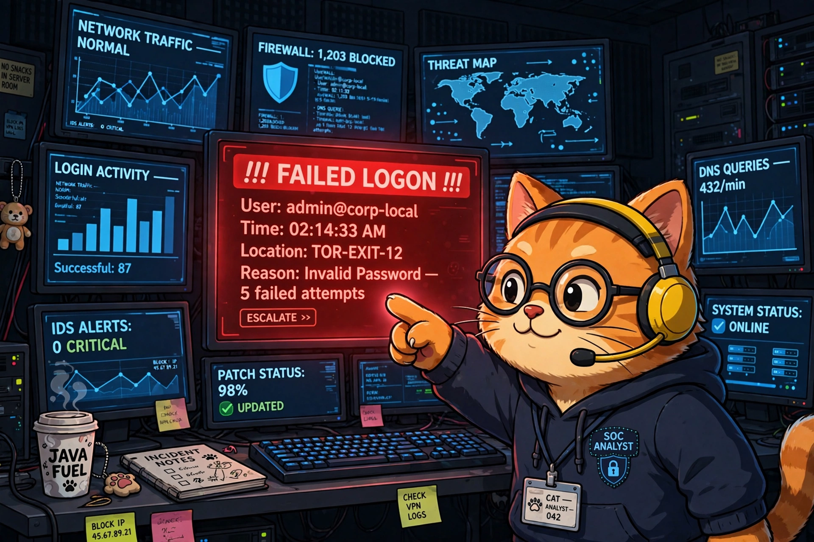

Build a Tiny Playbook in Python That Watches Windows Event Logs for Suspicious Logons

The stakeout: one cat, one Security log, and a nose for brute force.
Last time, I promised you a robot musician
In the SOAR post, the cat conductor raised the baton and the robot orchestra played. Then I said: next, we build one of those robots for real. This is that post.
Today you'll write a small Python playbook that watches a Windows machine's Security event log and barks when someone keeps failing to log on — the classic smell of a brute-force password attack. It's about 45 lines. When you're done, you'll understand what a SIEM does all day, because you'll have built a one-room version of one.
The idea in one paragraph
Windows writes down nearly everything that happens into event logs. Every failed password attempt lands in the Security log as Event ID 4625. Our playbook reads that log on a loop, counts failed logons per account, and if any account racks up too many failures in a short window, it raises the alarm. That's it. That's the whole detection. Multi-billion-dollar security products are, at their core, fancier versions of this loop.
The 30-second background
Three things to know before we touch code:
- The Security log is the diary. Windows keeps several event logs (Application, System, Security…). The Security log records logons, logoffs, and permission use — but only if auditing is turned on. We'll check that in setup.
- Event IDs are the index. Every type of event has a number. 4625 = failed logon. 4624 = successful logon. Memorize those two and you can read a Windows break-in like a children's book: a pile of 4625s followed by one 4624 is the plot of half of all intrusions.
- Brute force has a rhythm. One wrong password is a typo. Five wrong passwords in ten minutes from the same account is someone — or something — guessing. Our playbook listens for the rhythm, not single notes.
Setup (5 minutes)
You need a Windows machine (even a VM works), Python 3, and Administrator rights — the Security log doesn't open for just anybody.
pip install pywin32Then make sure Windows is actually recording logons. Open an Administrator PowerShell and run:
auditpol /get /category:"Logon/Logoff"You want to see Failure (and ideally Success) listed for Logon. If it says No Auditing, turn it on:
auditpol /set /category:"Logon/Logoff" /success:enable /failure:enableThat's the whole setup. If you've ever wondered what a SIEM engineer means by "log source onboarding," congratulations — you just did it, by hand, for one machine. They do it for ten thousand.
The playbook
Save this as logon_watchdog.py:
"""logon_watchdog.py — a tiny playbook that barks at brute-force logons.
Reads the Windows Security event log, counts failed logons (Event ID 4625)
per account, and alerts when any account fails too often, too fast.
Run as Administrator.
"""
import time
from collections import defaultdict, deque
from datetime import datetime, timedelta
import win32evtlog # pip install pywin32
LOG_NAME = "Security"
FAILED_LOGON = 4625
WINDOW = timedelta(minutes=10) # look at the last 10 minutes
THRESHOLD = 5 # this many failures = worth a look
POLL_SECONDS = 30
# account name -> timestamps of recent failures
failures = defaultdict(deque)
def new_failed_logons(since_record):
"""Yield (record_number, account, ip) for 4625 events newer than since_record."""
hand = win32evtlog.OpenEventLog("localhost", LOG_NAME)
flags = win32evtlog.EVENTLOG_BACKWARDS_READ | win32evtlog.EVENTLOG_SEQUENTIAL_READ
newest = since_record
try:
while True:
events = win32evtlog.ReadEventLog(hand, flags, 0)
if not events:
break
for e in events:
if e.RecordNumber <= since_record:
break
newest = max(newest, e.RecordNumber)
if e.EventID == FAILED_LOGON:
# Field positions can vary by Windows version;
# print(e.StringInserts) once to check yours.
account = e.StringInserts[5] # TargetUserName
ip = e.StringInserts[10] # IpAddress ("-" if local)
yield e.RecordNumber, account, ip
else:
continue
break
finally:
win32evtlog.CloseEventLog(hand)
return newest
def main():
print("🐱 watchdog on duty. Watching for failed logons... (Ctrl+C to stop)")
last_seen = 0
while True:
for record, account, ip in new_failed_logons(last_seen):
last_seen = max(last_seen, record)
now = datetime.now()
history = failures[account]
history.append(now)
# forget failures older than the window
while history and now - history[0] > WINDOW:
history.popleft()
if len(history) == THRESHOLD:
print(
f"🚨 {now:%H:%M:%S} possible brute force: "
f"'{account}' failed {THRESHOLD}x in {WINDOW.seconds // 60} min"
+ (f" from {ip}" if ip != "-" else " (local logon)")
)
time.sleep(POLL_SECONDS)
if __name__ == "__main__":
main()Run it from an Administrator terminal:
python logon_watchdog.pyTest it yourself
Here's the fun part. Open a second terminal and deliberately fail to log on — try runas /user:Administrator cmd and type the wrong password six times. (Use an account you own. Don't be weird.) Within about 30 seconds, your watchdog should print its 🚨 line.
You just did detection engineering. The whole discipline is this: decide what bad looks like, then listen for it.
A good detection is a stakeout, not a dragnet. You didn't alert on every logon — you defined "suspicious" (5 failures, 10 minutes) and only barked at that. Every noisy, ignored SIEM rule in the world is a stakeout where someone set the threshold to "anyone who walks past."
Where this lives in the real world
Your 45-line script is a SIEM in miniature — Splunk, Microsoft Sentinel, and QRadar all do exactly this loop: collect logs, count things in windows, fire alerts. The difference is scale and plumbing: they do it for tens of thousands of machines, keep a year of history, and let analysts click from the alert back to the raw events.
But detection is only half the playbook. In a real shop, your 🚨 line would kick off the response half:
- The EDR (Defender for Endpoint, CrowdStrike, SentinelOne) would isolate the targeted machine from the network so guessing can't continue.
- The firewall team would block the attacker's IP at the perimeter.
- ITSM (ServiceNow, Jira) would get a ticket with the account, the IP, and the timeline — because "someone should look at this" isn't a process until it's a ticket with an owner.
Our script detects. The SOAR post's robots respond. In the Level 7 lab later in this series, we'll close that loop: a playbook that takes an alert like this one and runs the triage itself — enrich, decide, ticket, no human touched it.
Homework (pick one)
- Tune the stakeout. Change
THRESHOLDandWINDOWand re-run your wrong-password test. Notice how 3-in-5-minutes catches your test faster but would also bark at a forgetful coworker. Threshold tuning is the job. - Add an allowlist. Service accounts fail logons for boring reasons. Skip accounts in a small
IGNORED = {"svc_backup"}set and watch your noise drop. - Write it down. Instead of
print, append alerts to a file with timestamps. You just invented log forwarding — the thing that feeds every SIEM on earth.
Next at Level 5: we write our first Sigma rule — the same "5 failures in 10 minutes" idea, but in the universal detection language that runs on Splunk, Sentinel, QRadar, and basically every SIEM that matters. Write once, detect everywhere.